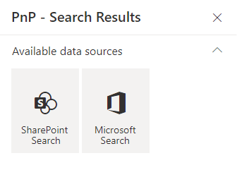
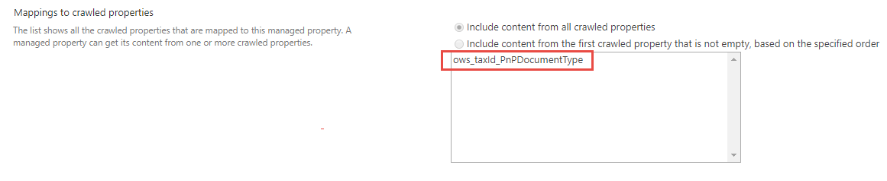

Data sources¶
Built-in data sources¶
By default, the following data sources are available:

Be careful, when you switch the data source in the property pane, all the previous data source properties are lost. We do this to avoid polluting the web part property bag with multiple useless configurations.
SharePoint Search¶
The 'SharePoint Search' data source retrieves items from the SharePoint search engine.
The SharePoint search is different from the Microsoft Graph search.
Source configuration¶
| Setting | Description | Default value |
|---|---|---|
| Query text | The input query text to pass to the search engine. This setting is not configurable directly in the data source options. To enable it, go to the third configuration page of the Web Part and select either a static or dynamic value (Ex: from a connected search box Web Part). See the connection documentation for more information on how to configure this option. This value can be then used in the Query template using the {searchTerms} token. Also this value can be a Keyword Query Language expression (KQL). |
None. |
| Query template | The search query template to use. It allows you to use dynamic tokens according to the context or specify conditions that should always apply to the query. | {searchTerms} |
| Result source ID | Can be either a built-in result source ID listed in the dropdown, or a custom result source that you specify. Type the GUID of the result source, or the SCOPE and NAME, separated by \| (pipe character). For this to take effect, you must press 'Enter' to save the value. Valid scopes are SPSiteSubscription, SPSite, SPWeb. Examples:
|
LocalSharePointResults |
| Selected properties | The SharePoint managed properties to retrieve from the results. They can be used with the same name in layouts and slots afterwards. Please be aware that the way we get the list of managed properties is not reliable and you might have to enter the property name manually. To add other managed properties to the list, clear out the dropdown list field and manually type or paste the name of your managed property and press ENTER. This will add it to the list of selected properties in the query. Pasting a comma separated list of property names also work. You can validate the property is working by using the Debug layout. If a list of properties is not shown, enter manually. |
|
| Sort settings | Configure the sort settings of the data source. Properties listed in the dropdown are all static properties marked as 'Sortable' in the SharePoint search schema. However, it does not list all possible RefinableXXX or aliases fields. To use them, you must enter the value manually and press 'Enter' to validate. You can also use dynamic tokens in sort field values. For a particular field, you can define if it should be used for initial sort (i.e. when the results are loaded for the first time) or be only available for users in the sort control (i.e. after the results are loaded). The sort control does not consider default sort fields (i.e. select them by default) and you can only sort on a single field at a time according the fields you defined. If no user sort fields are defined in the configuration, the sort control won't be displayed. | None. |
| Refinement filters | The initial refinement filters to apply to the query. Filters has to be written using FQL (Fast Query Language) (e.g. FileType:equals("docx")). They will be applied every time to the current search query regardless selected filters from connected Web Parts. Note: for string expressions, use " instead of '. |
None. |
| Language of the search request | The language to use for the search request. By default the search request will be made using the current user interface language. This parameter is mainly used to process diacritics, plurals, etc. correctly according to the language. | Current UI language. |
| Enable query rules | Whether or not apply SharePoint query rules. | False. |
| Trim duplicates | A Boolean value that specifies whether duplicate items are removed from the results. | False. |
| "Cache timeout | Number of minutes before the cache expires. Set it to 0 to disable caching. | 0. |
| Enable audience targeting | Whether or not results should be targeted according to the audiences that the current user belongs to. More information about modern audiences and how to configure them. | False. |
| Enable localization | If enabled, the Web Part will try to translate the taxonomy term IDs found in result item properties and refinement values to their corresponding label according to the curent UI language. To get it work, you must map a new refinable managed property associated with ows_taxId_ crawled property and turn this toggle 'on':  If enabled and depending on how many items are currently being displayed, this could slightly decrease the loading performance. To use translated values in your template, you must use the 'Auto + <property_name>' property format instead of the original property name. For instance, to use translated values of the 'owstaxidmetadataalltagsinfo' property, you must use the 'Autoowstaxidmetadataalltagsinfo' auto created property. |
False. |
| Hit-highlighted properties | The list of SharePoint managed properties (separated by a comma) to return hit highlighted information (whether the search query match each specified managed property or not). Note: HitHighlightedProperties will be null if there is a field in Hit-highlighted properties doesn't exist in Selected properties |
None. |
| Collapse specification | The CollapseSpecification property takes a Spec parameter that can contain multiple fields separated either by a comma or a space, which evaluated together specify a set of criteria used for collapsing. More information about the CollapseSpecification. | None. |
{kind=link}
Microsoft Search¶
The 'Microsoft Search' data source retrieves items from the Microsoft search engine.
This data source can use the Microsoft Search beta API that is not suitable for production use. Use the normal version for production use.
Source configuration¶
| Setting | Description | Default value |
|---|---|---|
| Entity types to search | The entity types to search. See the Microsoft Search API documentation to see valid combinations. | Drive items (SharePoint & OneDrive) |
| Query template | A query template allowing to use tokens to set a base query the same way as SharePoint search. | {searchTerms} |
| Use beta endpoint | Flag to switch between v1.0 and beta Microsoft Graph endpoint. |
false |
| Collapse settings (beta only) | Specifies the criteria used for collapsing search results. Applies only to sortable/refinable properties. More information about the CollapseProperties | None. |
| Enable spelling suggestions | Flag to enable spelling suggestions. If enabled, the user will get the search results for the original search query and suggestions for spelling correction in the queryAlterationResponse property of the response for the typos in the query. | false |
| Enable spelling modifications | Flag to enable spelling modifications. If enabled, the user will get the search results for the corrected query in case of no results for the original query with typos. The response will also include the spelling modification information in the queryAlterationResponse property. | false |
| Sort settings | Configure the sort settings of the data source. Properties listed in the dropdown are all static properties marked as 'Sortable' in the SharePoint search schema. However, it does not list all possible RefinableXXX or aliases fields. To use them, you must enter the value manually and press 'Enter' to validate. For a particular field, you can define if it should be used for initial sort (i.e. when the results are loaded for the first time) or be only available for users in the sort control (i.e. after the results are loaded). The sort control does not consider default sort fields (i.e. select them by default) and you can only sort on a single field at a time according the fields you defined. If no user sort fields are defined in the configuration, the sort control won't be displayed. | None. |
| Enable result Types | Display results according to the result types defined in the Microsoft Search admin center. This option can only be used if External Items entity type is selected and the layout type is "Adaptive Cards |
None. |
| Show SharePoint Embedded (hidden) in search results | By default content in SharePoint Embedded Containers is not visible in Microsoft Search. Add the relevant ContainerTypeids to the query template, like ContainerTypeId:"1adc34ca-aef3-4e13-aacf-39b43affd198" and the contain is now returned. | None. |
| Show MS Archived content in search results | By default contain archived with Microsoft Archive is hidden from Microsoft Search, but this option sets the required "includeHiddenContent" and "isArchived" properties, which ensures that the contant is now returned by the API. | None. |
Paging¶
The paging options are available for all data sources.
| Setting | Description | Default value |
|---|---|---|
| Show paging | Hide or display the paging control. | true |
| Number of items per page | Specify the number of items to show per page. | 10 |
| Number of pages to display in range | Determines the number of pages to display in range. | 5 |
| Hide navigation buttons (prev page, next page) | Self explicit. | false |
| Hide first/last navigation buttons | Self explicit. | false |
| Hide navigation buttons (prev, next, first, last) if they are disabled. | Self explicit. | true |
| Enable page number in query string | When enabled, the current page number is written to the URL as a ?page=N query string parameter so pages can be deep-linked and the browser back/forward buttons navigate between result pages instead of leaving the page. |
false |